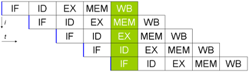
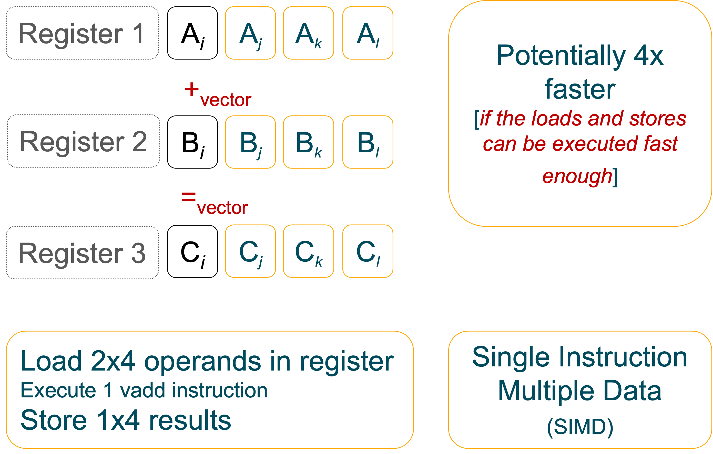
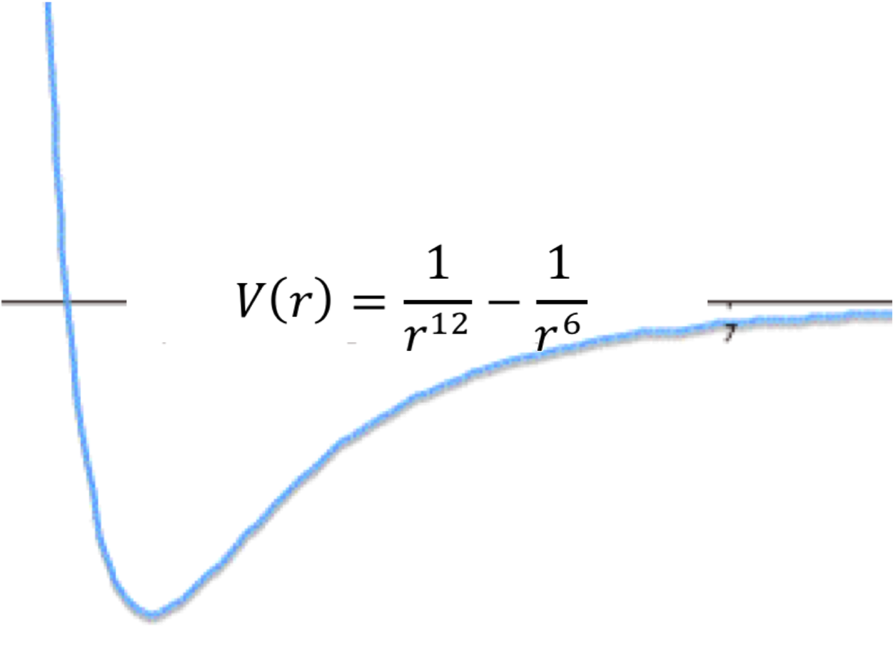

Chapter 2 - Aspects of modern CPU architecture
You do not have to be a CPU architecture specialist in order to be able to write efficient code. However, there are a few aspects of CPU architecture that you should understand.
The hierarchical structure of CPU Memory
CPU memory of modern CPUs is hierarchically organised. The memory levels close to the processor need to be fast, to serve it with data so that it can continue its work. As fast memory is expensive, the levels close to the processor are also smaller. The farther away from the processor the bigger they are, but also the slower.
- Each processing unit (or core) has a number of registers (~1 kB) and vector registers on which instructions can immediately operate (latency = 0 cycles). The registers are connected to
- a dedicated L1 cache (~32 kB per core), with a latency of ~ 1 cycle. This is in turn connected to:
- a dedicated L2 cache, (~256 kB per core), with a latency of ~10 cycles. This is in turn connected to:
- the L3 cache, which is shared among a group of cores, (~2 MB per core), with a latency of ~50 cycles. This is connected to:
- the main memory, which is shared by all cores,(256 GB - 2 TB), with a latency of ~200 cycles.
The cores and the caches are on the same chip. For this reason they are considerably faster than the main memory. Faster memory is more expensive and therefor smaller. The figure below illustrates the layout.

The I/O hub connects the cpu to the outside world, hard disk, network, ...
When an instruction needs a data item in a register, the CPU looks first in the L1 cache, if it is there it will it to the register that was requested. Otherwise, the CPU looks in L2. If it is there, it is copied to L1 and the register. Otherwise, the CPU looks in L3. If it is there, it is copied to L2, L1 and the register. Otherwise, the CPU looks copies the cache line surrounding the data item to L3, L2, L1 and the data item itself to the register. A cache line is typically 64 bytes long and thus can contain 4 double precision floating point numbers or 8 single precision numbers. The main consequence of this strategy is that if the data item is part of an array, the next elements of that array will also be copied to L1 so that when processing the array the latency associated with main memory is amortized over 4 or 8 iterations. In addition, the CPU will notice when it is processing an array and prefetch the next cache line of the array in order to avoid that the processor has to wait for the data again. This strategy for loading data leads to two important best practices for making optimal use of the cache.
- Exploit Spatial locality: Organize your data layout in main memory in a way that data in a cache line are mostly needed together.
- Exploit Temporal locality: Organize your computations in a way that once a cache line is in L1 cache, as much as possible computations on that data are carried out. This favors a high computational intensity (see below). Common techniques for this are loop fusion and tiling.
Loop fusion
Here are two loops over an array x:
for xi in x:
do_something_with(xi)
for xi in x:
do_something_else_with(xi)
If the array x is big, too big to fit in the cache, the above code would start loading x elements into the cache,
cach line by cache line. Since x is to large to fit in the cache, at some point, when the cache is full, the CPU
will start to evict the cache lines that were loaded long time a go ane are no more used to replace them with new
cache lines. By the time the first loop finishes, the entire beginning of the x array has been evicted and the
scond loop can start to transfer x again from the main memory to the registers, cache line by cache lina. this
violiate the temporal locality principle. So, it incurs twice the data traffic. Loop fusion fuses the two loops into
one and does all computations needed on xi when it is in the cache.
for xi in x:
do_something_with(xi)
do_something_else_with(xi)
The disadvantage of loop fusion is that the body of the loop may become too large and require more vector registers than are available. At that point some computations may be done sequentially and performance may suffer.
Tiling
Tiling is does the opposite. Ik keeps the loops separate but restricts them to chunks of x which fit in L1 cache.
for chunk in x: # chunk is a slice of x that fits in L1
for xi in chunk:
do_something_with(xi)
for xi in chunk:
do_something_else_with(xi)
Again all computations that need to be done to xi are done when it is in L1 cache. Again the entire x array is
transferred only once to the cache. A disadvantage of tiling is that the chunk size needs to be tuned to the size of
L1, which may differ on different machines. Thus, this approach is not cache-oblivious. Loop fusion, on the
other hand, is cache-oblivious.
A good understanding of the workings of the hierarchical structure of processor memory is required to write efficient programs. Although, at first sight, it may seem an overly complex solution for a simple problem, but it is a good compromise to the many faces of a truly complex problem.\
Tip
An absolute must-see for this course is the excellent presentation on this matter by Scott Meyers: CPU Caches and Why You Care. (We can also recommend all his books on C++).
Intra-core parallellisation features
Modern CPUs are designed to (among other things) process loops as efficiently as possible, as loops typically account for a large part of the work load of a program. To make that possible CPUs use two important concepts: instruction pipelining (ILP) and SIMD vectorisation.
Instruction pipelining
Instruction pipelining is very well explained here.
Basically, instructions are composed of micro-instructions (typically 5: instruction Fetch (IF), instruction decode (ID), execute (EX), memory access (MEM), write back (WB), details here), each of which are executed in separate hardware units of the CPU. By executing the instructions sequentially, only one of those units would be active at a time: namely, the unit responsible for the current micro-instruction. By adding extra instruction registers, all micro-instruction hardware units can work simultaneously, but on micro-instructions pertaining to different but consecutive instructions. In this way, on average 5 (typically) instructions are being executed in parallel. This is very useful for loops.
Executing micro-instructions serially, without pipelining:
Pipelined execution of micro-instructions, in the middle part 5 micro-instructions are executed simultaneously, which means that on average 5 instructions are executed simultaneously:

There are a couple of problems that may lead to pipeline stalls, situations where the pipeline comes to halt.
- A data element is requested that is not in the L1 cache. It must be fetched from deeper cache levels or even from main memory. This is called a cache miss. A L1 cache miss means that the data is not found in L1, but is found in L2. In a L2 cache miss it is not found in L2 but it is in L3, and a L3 cache miss, or a cache miss tout court* de data is not found in L3 and has to be fetched from main memory. The pipeline stops executing for a number of cycles corresponding to the latency of that cache miss. Data cache misses are the most important cause of pipeline stalls and as the latency can be really high (~100 cycles).
- A instruction is needed that is not in the L1 instruction cache. This may sometimes happen when a (large) function is called that is not inlined. Just as for a data cache miss, the pipeline stalls for a number of cycles corresponding to the latency of the cache miss, just as for a data cache miss.
- You might wonder how a pipeline proceeds when confronted with a branching instruction, a condition that has to be tested, and must start executing different streams of instructions depending on the outcome (typically if-then-else constructs). Here's the thing: it guesses the outcome of the test and starts executing the corresponding branch. As soon as it notices that it guessed wrong, which is necessarily after the condition has been tested, it stops, steps back and restarts at the correct branch. Obviously, the performance depends on how well it guesses. The guesses are generally rather smart. It is able to recognize temporal patterns, and if it doesn't find one, falls back on statistics. Random outcomes of the condition are thus detrimental to performance as its guess will be wrong at least half the time.
SIMD vectorisation
Scalar arithemetic, e.g. the addition, in CPUs operates as follows: the two operands are loaded in two (scalar) registers, the add instruction will add them and put the result in a third register.
In modern CPUs the registers have been widened to contain more than one operand and the corresponding vector addition can compute and store the result in the same number of cycles. Typically, a vector register is now 512 bits wide, or 64 bytes, the same as the lenght of a cache line.

SIMD vectorisation can in principle speed up loops by a factor of 2, 4, 8, 16, depending on the number of bytes the data elements use. Howecer, when the data being processed is not in the cache it does not help.
Tip
If your code does not vectorize, first find out if the data is in the cache, If not is does not help.
The cost of floating point instructions
Note
All animals are equal, but some animals are more equal than others. Animal farm, George Orwell.
Not all mathematical operations are equally fast. Here's a table listing their relative cost:
| cost | operations |
|---|---|
| cheap | addition, subtraction, multipication |
| rather expeesive | division |
| expensive | square root |
| very expensive | trigonometric, exponential, logarithmic functions |
As an example, let's write a functon for the Lennard-Jones potential:

Here's a first C++ translation of the mathematical expression of the Lennard-jones potential:
double VLJ0( double r ) {
return 1./pow(r,12) - 1./pow(r,6);
}
We measured the cost of VLJ0 by timing its application to a long array and express it relative to the best
implementation we could come up with. The cost of VLJ0 is 18.0, so it is a really expensive implemenation. In view
of the table above, that should come to no surprise: it has two divisions and two pow calls which raise a real
number to a real power. pow is implemented using an exponential and a logarithm. Let's try to improve that.
We can get rid of the divisions using :
function
double VLJ1( double r ) {
return std::pow(r,-12) - std::pow(r,-6);
}
This scores a bit better: 14.9, but the two pow calls remain expensive. The expression for the Lennard-Jones
potential can be rewritten as . Using a temporary to store we are left with only one
pow call:
double VLJ2( double r ) {
double tmp = std::pow(r,-6);
return tmp*(tmp-1.0);
}
This has a performance score of 7.8, still far away from 1. Realizing that we don't need to use pow because the
expression has in fact integer powers,
double VLJ3( double r ) {
double tmp = 1.0/(r*r*r*r*r*r);
return tmp*(tmp-1.0);
}
This has one division, 6 multiplications and subtraction. We can still reduce the number of multiplications a bit:
double VLJ( Real_t r ) {
double rr = 1./r;
rr *= rr;
double rr6 = rr*rr*rr;
return rr6*(rr6-1);
}
Both these implementation have a performance score of 1. The optimum has been reached. The effect of two multiplications less in the last implementation doesn't show, because in fact the compiler optimizes them away anyway.
Note
Compilers are smart, but it will not do the math for you.
There is yet a common sense optimisation that can be applied. The standard formulation of the Lennard-Jones potential is expressed as a function of . Since it has only even powers of we can as well express it as a function of :
At first sight, this may not immediately seem an optimisation, but in Molecular Dynamics the Lennard-Jones potential is embedded in a loop over all interacting pairs for which distance between the interacting atoms is computed:
double interaction_energy = 0;
for(int i=0; i<n_atosm; ++i)
std::vector<int>& verlet_list_i = get_verlet_list(i);
for(int j : verlet_list_i) {
r_ij = std::sqrt( (x[j] - x[i])^2 + (y[j] - y[i])^2 + (z[j] - z[i])^2 )
if( r_ij < r_cutoff)
interaction_energy += VLJ(r_ij);
}
Using this loop can be implemented as:
double interaction_energy = 0;
double r2_cutoff = r_cutoff^2;
for(int i=0; i<n_atosm; ++i)
std::vector<int>& verlet_list_i = get_verlet_list(i);
for(int j : verlet_list_i) {
s_ij = (x[j] - x[i])^2 + (y[j] - y[i])^2 + (z[j] - z[i])^2
if( s_ij < r2_cutoff)
interaction_energy += V_2(s_ij);
}
This avoid the evaluation of a sqrt for every interacting pair of atoms.
Homework
Write a program in C++ or Fortran to time the above implementations of the Lennard-Jones potential. Since timers are not accurate enough to measure a single call, apply it to an array and divide the time for processing the array by the number of array elements.
- Think about the length of the array in relation to the size of the cache (L1/L2/L3).
- Think about vectorisation.
Consequences of computer architecture for performance
Recommendations for array processing
The hierarchical organisation of computer memory has also important consequences for the layout of data arrays and for loops over arrays in terms of performance (see below).
- Loops should be long. Typically, at the begin and end of the loop thee pipeline is not full. When the loop is long, these sections can be amortized with respect to the inner section, where the pipeline is full.
- Branches in loops should be predictable. The outcome of unpredictable branches will be guessed wrongly, causing pipeline stalls. Sometimes it may be worthwile to sort the array according to the probability of the outcome if this work can be amortized over many loops.
- Loops should access data contiguously and with unit stride. This assures that
- at the next iteration of the loop the data element needed is already in the L1 Cache and can be accessed without delay,
- vector registers can be filled efficiently because they need contiguous elements from the input array.
- Loops should have high computatonal intensity. The computational intensity is defined as , with the number of compute cycles and the total number of bytes read and written. A high computational intensity means many compute cycles and little data traffic to/from memory and thus implies that there will be no pipeline due to waiting for data to arrive. This is a compute bound loop. Low computational intensity, on the other hand, will cause many pipeline stalls by waiting for data. This is a memory bound loop. Here, it is the bandwidth (the speed at which data can be transported from main memory to the registers) that is the culprit, rather than the latency.
Recommendations for data structures
The unit stride for loops recommendation translates into a recommendation for data structures. Let's take Molecular Dynamics as an example. Object Oriented Programming (OOP) would propose a Atom class with properties for mass , position , velocity , acceleration , and possibly others as well, but let's ignore those for the time being. Next, the object oriented programmer would create an array of Atoms. This approach is called an array of structures (AoS). The AoS approach leads to a data layout in memory like | , , , , , , , , | , , , , , , , , | , , , , , , , , | , , , , , , ... Assume we store the properties as single precision floating point numbers, hence a cache line spans 8 values. We marked the cache line boundaries in the list above with vertical bars. Suppose for some reason we need to find all atoms for which is between and . A loop over all atoms would test and remember the for which the test holds. Note that every cache line contains at most one single data item that we need in this algorithm. some cache lines will even contain no data items that we need. For every data iten we need, a new cache line must be loaded. This is terribly inefficient. There is a lot of data traffic, only 1/8 of which is useful and the bandwidth will saturate quickly. Vectorisation would be completely useless. To fill the vector register we would need 8 cache lines, most of which would correspond to cache misses and cost hundreds of cycles, before we can do 8 comparisons at once. The AoS, while intuitively very attractive, is clearly a disaster as it comes to performance. The - much better - alternative data structure is the SoA, structure of Arrays. This creates an AtomContainer class (to stay in the terminology of Object Oriented progrmming) containing an array of length for each property. In this case there would be arrays for , , , , , , , , , . Now all are stored contiguously in memory and every item in a cache would be used. Only one cache line would be needed to fill a vector register. Prefetching would do a perfect job. The SoA data structure is much more efficient, and once you get used to it, almost equally intuitive from an OOP viewpoint. Sometimes there is discussion about storing the coordinates of a vector, e.g. as per-coordinate arrays, as above, or as an array of vectors. The latter makes is more practical to define vector functions like magnitude, distance, dot and vector products, ... but they make it harder to SIMD vectorise those functions efficiently, because contiguous data items need to be moved into different vector registers.
Selecting algorithms based on computational complexity
The computational complexity of an algorithm is an indication of how the number of instructions in an algorithms scales with the problem size . E.g. the work of an algorithm scales quadratically with its problem size. As an example consider brute force neighbour detection (Verlet list construction) of interacting atoms in Molecular Dynamics:
// C++
for (int i=0; i<N; ++i)
for (int j=i+1; j<N; ++j) {
r2ij = squared_distance(i,j);
if (r2ij<r2cutoff)
add_to_Verlet_list(i,j);
}
Note
Note that we have avoided the computation of the square root by using the squared distance rather than the distance.
The body of the inner for loop is executed times. Hence, it is . Cell-based Verlet
list construction restricts the inner loop to the surrounding cells of atom i and is therefor .
The computational complexity of an algorithm used to be a good criterion for algorithm selection: less work means faster, not? Due to the workings of the hierarchical memory of modern computers the answer is not so clear-cut. Consider two search algorithms for finding an element in a sorted array, linear search and binary search bisecting. Linear search simply loops over all elements until the element is found (or a larger element is found), and is thus . Binary search compares the target value to the middle element of the array. If they are not equal, the half in which the target cannot lie is eliminated and the search continues on the remaining half, again taking the middle element to compare to the target value, and repeating this until the target value is found. If the search ends with the remaining half being empty, the target is not in the array. The complexity of this algorithm is . Clearly, binary search finds the answer by visiting far fewer elements in the array as indicated by its lower complexity. However, contrary to linear search it visits the elements in the array non-contiguously, and it is very well possible that there will be a cache miss on every access. Linear search, on the other hand, will have no cache misses: it loads a cache line, visits all the elements in it and in the mean time the prefetching machinery takes care of loading the next cache line. It is only limited by the bandwidth. For small arrays linear search will be faster than binary search. For large arrays the situation is reversed. A clever approach would be to combine both methods: start with binary search and switch to linear search as soon as the part of the array to search is small enough. This needs some tuning to find the at which both algorithms perform equally well. The combined algorithm is thus not cache-oblivious.
Tip
There is no silver bullet. All approaches have advantages and disadvantages, some may appear in this situation and others in another situation. The only valid reasoning is: numbers tell the tale (meten is weten): measure the performance of your code. Measure it twice, then measure again.
Supercomputer architecture
Note
For a gentle but more detailed introduction about supercomputer architecture check out [this VSC course] (https://calcua. uantwerpen.be/courses/supercomputers-for-starters/Hardware-20221013-handouts.pdf). An updated version will appear soon here (look for 'Supercomputers for starters').
We haven't talked about supercomputer architecture so far. In fact, supercomputers are not so very different from ordinary computers. The basic building block of a supercomputer is a compute node, or a node tout court. It can be seen as an ordinary computer but without peripheral devices (no screen, no keyboard, no mouse, ...). A supercomputer consists of 100s to 1 000s of nodes (totalling up to 100 000s of cores), mutually connected to an ultra-fast network, the interconnect. The interconnect allows the nodes to exchange information so that they can work together on the same computational problem. It is the number of nodes and cores that makes a supercomputer a supercomputer, not (!) the performance of the individual cores. Motherboards for supercomputer nodes typically have 2 sockets, each of which holds a CPU. Technically speaking they behave as a single CPU double the size, and double the memory. Performance-wise, however, the latency across the two CPUs is typically a factor 2 larger. This goes by the name ccNUMA, or cache coherent non-uniform memory architecture. Cache coherence means that if caches of different copies hold copies of the same cache line, and one of them is modified, all copies are updated. NUMA means that there are different domains in the global address space of the node with different latency and/or bandwidth. CPU0 can access data in DRAM1, but this is significantly slower (typically 2x).